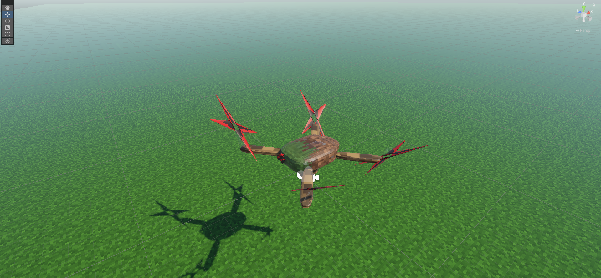
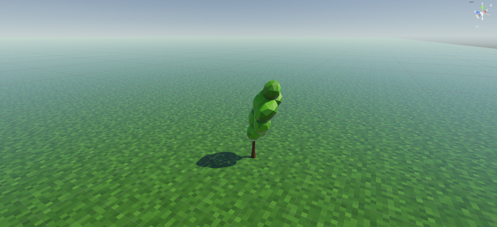

TrickleLK
Я анонимный и скромный разработчик. Делюсь своими 3D‑ и 2D‑моделями, спрайтами и скриптами для Unity. Здесь будут .fbx‑ассеты и небольшие скрипты, которые частично оживляют объекты. Всё для тех, кому нужны готовые куски для игр.

🎮 3D .fbx + скрипт
Робот-дрон

🌲 3D .fbx (Low Poly) (Rigged)
Дерево
Скоро
🕹️ 2D Спрайт
Герой (Idle)